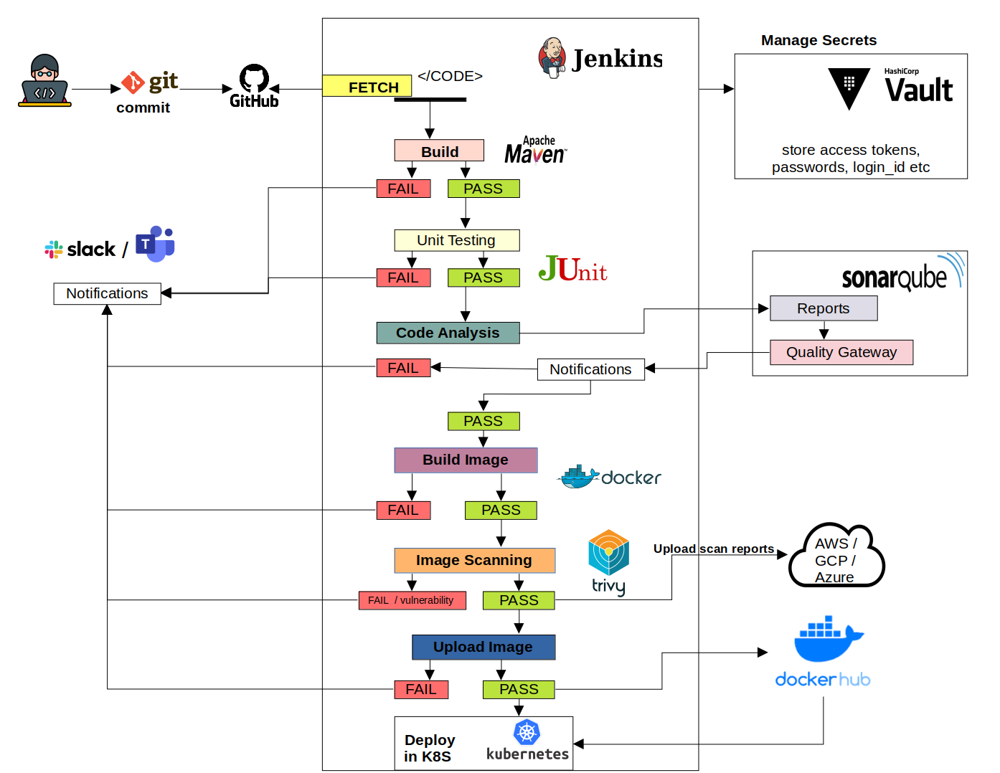

A Jenkins pipeline that takes a Spring Boot app from a Git commit to Kubernetes, with code analysis, a quality gate, container image scanning and Vault-managed secrets along the way. I built it as my project for the C-DAC PG Diploma in IT Infrastructure, Systems and Security (PG-DITISS).
Each stage runs in order. If one fails, the pipeline stops there and Slack gets the result.
Jenkins pulls the latest code from GitHub.
Compiles the app, runs the unit tests and publishes the test results in Jenkins.
Static analysis for bugs, code smells and security issues. Results are stored in SonarQube backed by PostgreSQL.
SonarQube sends its verdict back to Jenkins through a webhook.
The pipeline stops here if the code fails the gate.A multi-stage build produces a small image that runs the app as a non-root user.
Scans the image for known vulnerabilities (CVEs) and writes an HTML report.
The Trivy report is uploaded to an S3 bucket so it can be reviewed later.
The image is tagged with the build number and pushed.
Docker Hub credentials come from HashiCorp Vault at runtime, never from the Jenkinsfile.Rolls out the new image as a Deployment, exposed through a NodePort Service.
After every run, success or failure, Jenkins posts the job name, build number and a link to the build.

Reviewing my own pipeline as a security reviewer would, these are the changes I would make before using it in production.
--exit-code 1 --severity HIGH,CRITICAL would turn the scan into a second gate.kubectl, Helm or a GitOps tool such as Argo CD.securityContext and a read-only root filesystem.latest tag.